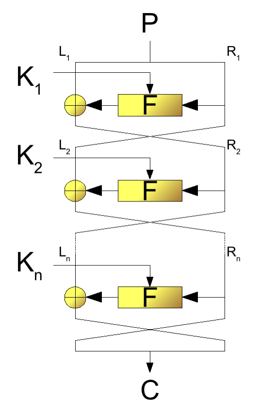

Kryptologie ist eine Wissenschaft, die sich mit Methoden der Verschlüsselung und damit verwandten Verfahren befasst. Kryptologen sind ausgebildete High-End-Mathematiker.
Kryptographie bezeichnet den Zweig der Kryptologie, der sich mit der Erstellung und dem Design kryptographischer Algorithmen befasst. In der Kryptoanalyse geht es um das nicht-autorisierte Brechen der Verschlüsselungen.
Der Kryptologie liegt ein einfaches Kommunikationsmodell zugrunde:
Alice und Bob wollen vertraulich kommunizieren, d.h. eine Nachricht, die Alice sendet, soll nur von Bob gelesen werden können (und umgekehrt).
Ein Angreifer heißt in diesem Modell Eve, deren Ziel es ist, die Kommunikation zu beeinflussen.
Anforderungen an kryptographische Systeme
Bei der Kryptographie geht es um folgende wesentliche Punkte:
Geheimhaltung
Ein kryptographisches System, das Geheimhaltung gewährleistet, verhindert die Entnahme von Informationen durch eine dritte, nicht autorisierte Partei während der Übertragung über einen unsicheren Kommunikationskanal.
Oder: Der Sender einer Nachricht kann sicher sein, dass nur der legitime Empfänger die Nachricht lesen kann.
Authentizität
Ein kryptographisches System, das Authentizität gewährleistet, verhindert das nicht autorisierte Einschleusen einer Nachricht in einen unsicheren Kommunikationskanal.
Oder: Der Empfänger kann sicher sein, dass die Nachricht vom angegebenen Sender stammt.
Digitale Signatur
Der Empfänger einer Nachricht kann eine neutrale Partei davon überzeugen, wer die Nachricht verfasst hat (ist schärfer als Authentifikation)
Integrität
Ein kryptographisches System, das Integrität gewährleistet, verhindert die nicht autorisierte Manipulation des Inhalts einer Nachricht während der Übertragung über einen unsicheren Kommunikationskanal.
Verbindlichkeit
Sender und Empfänger soll es nicht möglich sein, im Nachhinein zu behaupten, die Nachricht nicht gesendet / empfangen zu haben (ist so ähnlich wie ein Einschreiben).
Weitere Begriffe
Identifikation
bedeutet die eindeutige Zuordnung einer Identität zu einem Subjekt, z.B. Benutzername / E-Mail
Authentifizierung
Verifikation der Gültigkeit einer Tatsache (Passwort / PIN)
Autorisierung
Zuordnung von Rechten zu einem Subjekt
Vorstellbare Klausuraufgaben:
Stellen Sie den Unterschied zwischen Authentifizierung und Autorisierung heraus.
Antwort: Bei der Authentifizierung geht es um den Beweis der eigenen Identität, in der Regel ein Anmeldeprozess. Bei der Autorisierung hingegen berechtigt man eine dritte Person, die Nachricht zu lesen. Übertagen auf die Kryptographie bedeutet dies, dass die Authentifizierung sicherstellt, dass nur der legitime Empfänger einer Nachricht diese auch lesen kann. Bei der Autorisierung berechtigt man eine dritte Partei, die Nachricht auch zu lesen.
Was grenzt den Datenschutz von der Datensicherheit ab (siehe Begriffe im Folgenden definiert)?
Antwort: Der Datenschutz regelt, in welchem Maße personenbezogene Daten überhaupt erhoben werden dürfen, wer diese sehen und abrufen kann und wer damit “handeln” darf. Er zeigt Richtlinien für den Umgang mit diesen Daten auf. Die Datensicherheit beschäftigt sich mit der Privatisierung bzw. dem allgemeinen Schutz von Daten, die bereits erhoben wurden.
Datenschutz und Datensicherheit
Datenschutz
“Je nach Betrachtungsweise wird Datenschutz verstanden als Schutz vor missbräuchlicher Datenverarbeitung, Schutz des Rechts auf informationelle Selbstbestimmung, Schutz des Persönlichkeitsrechts bei der Datenverarbeitung und auch Schutz der Privatsphäre.”
Der Datenschutz behandelt den Umgang mit personenbezogenen Daten. Hier geht es um die Frage, ob personenbezogene Daten überhaupt erhoben werden dürfen und / oder verarbeitet / anonymisiert werden.
Datensicherheit
“Als Informationssicherheit bezeichnet man Eigenschaften von informationsverarbeitenden und -lagernden (technischen oder nicht-technischen) Systemen, die die Schutzziele Vertraulichkeit, Verfügbarkeit und Integrität sicherstellen.
Informationssicherheit dient dem Schutz vor Gefahren bzw. Bedrohungen, der Vermeidung von wirtschaftlichen Schäden und der Minimierung von Risiken.”
Datensicherheit versucht, die schon vorhandenen Daten (ob personenbezogen oder nicht) in einem informationstechnischen System zu schützen / unzugänglich zu machen.
Klartext und Chiffrierung
Definition: Der Klartext (engl. cleartext oder plaintext) ist die Nachricht, die durch ein geeignetes Verfahren in eine Form transformiert wird, dass eine Informationsentnahme durch eine dritte Partei nicht möglich ist.
Es gibt zwei grundlegende Verfahren, eine Nachricht vor Informationsentnahme zu schützen:
Kryptographische Verfahren (“unlesbar machen”)
Steganographie (Existenz der Nachricht verschleiern)
Das Verfahren, einen Klartext in eine Form zu transformieren, dass die Informationsentnahme nicht möglich ist, heißt Verschlüsselung oder Chiffrierung. Eine verschlüsselte Nachricht heißt Chiffretext.
Anmerkung: Kodierung hat eine andere Bedeutung, nämlich Umwandlung in eine andere Form, damit sie geeignet verarbeitet werden kann.
Die Umkehrung heißt Entschlüsselung oder Dechiffrierung.
Üblicherweise verwenden heutige kryptographische Verfahren einen SchlüsselK, das ist ein besonderer Wert aus einem Schlüsselraum.
Grundlegendes Szenario
Sender und Empfänger benötigen den gleichen Schlüssel K
zum Ver- / Entschlüsseln (daher symmetrische Verschlüsselung).
Probleme bei symmetrischen Verfahren
Symmetrische Systeme haben (alle) drei grundsätzliche Probleme:
Key Exchange Problem
Der Schlüssel K
muss auf sicherem Weg von Alice zu Bob gelangen.
Key Management Problem
Bei n Parteien: Wieviele
Ks
werden benötigt?
→2n(n−1)
Wird für jede Sitzung ein eigener Schlüssel verwendet oder für alle der Gleiche?
Mit symmetrischen Verfahren ist es nicht möglich, eine digitale Signatur zu realisieren. Es gibt kein eindeutiges Identifikationsmerkmal für den Sender einer Nachricht.
Asymmetrische Verfahren
Public-Key Kryptographie oder asymmetrische Verschlüsselung
Das funktioniert so:
Szenario 1: Alice will Bob eine vertrauliche Nachricht zukommen lassen (ohne Key-Exchange)
Bob erzeugt zwei Schlüssel Kpriv und Kpub
KprivB
ist nur Bob bekannt.
KpubB
kann veröffentlicht werden.
Alice besorgt sich KpubB von Bob.
Alice verschlüsselt den Klartext mit Bobs KpubB.
→ Chiffretext
Chiffretext geht an Bob (Bedingung: DKpubB(EKpubB(M))≠M
Die Entschlüsselung darf mit dem Public-Key von Bob nicht möglich sein.
Bob entschlüsselt das Chiffrat mit seinem KprivB, den nur er hat
→ Klartext
DKprivB(EKpubB(M))=M
Nur mit dem privaten Schlüssel KprivB von Bob darf die Entschlüsselung
möglich sein.
Somit ist das Key-Exchange Problem gelöst, da ein Schlüssel ausreicht (KpubB),
mit dem beliebig viele Parteien vertraulich mit Bob kommunizieren können.
In der Praxis: Public-Key-Verfahren sind etwa 1000x langsamer als symmetrische Verfahren.
Man verwendet daher sogenannte Hybrid-Verfahren.
Die Public-Key-Verfahren werden dabei genutzt, um zwischen Sender und Empfänger einen Sitzungsschlüssel auszutauschen; die Nutzdaten werden dann symmetrisch verschlüsselt, da Sender und Empfänger einen gemeinsamen Schlüssel haben.
Szenario 2: Digitale Signatur, Alice will Bob ein signiertes Dokument zukommen lassen.
Alice erzeugt ein Schlüsselpaar (KprivA,KpubA) (Sender).
Alice verschlüsselt den Klartext mit ihrem KprivA (den nur Alice hat)
→ Chiffrat
Idee: DKpubA(EKprivA(M))=M
Chiffrat geht an Bob.
Bob besorgt sich KpubA und dechiffriert das erhaltene Chiffrat.
Entsteht Klartext, dann ist auch für eine neutrale dritte Partei gezeigt, dass Alice die Nachricht verfasst hat.
In der Praxis geht das etwas anders:
Der Hash-Algorithmus erzeugt eine Prüfziffer (180 Bit), die klartext-abhängig ist und sich ändert, falls die Nachricht manipuliert wurde. Damit garantiert der Hashwert die Integrität, d.h. das ist das Instrument, um zu prüfen, ob der Klartext während der Übertragung manipuliert wurde.
Block- und Strom-Chiffren
Sowohl symmetrische als auch asymmetrische Verfahren können in Form von Block-Chiffre oder Strom-Chiffre eingesetzt werden.
Bei Block-Chiffren werden Bitblöcke, z.B. 64-Bit, in einem Vorgang in einen 64-Bit Chiffreblock verschlüsselt (Klartext → aufteilen in n64-Bit Blöcke).
Bei Strom-Chiffren (bspw. bei WLAN) wird Zeichen für Zeichen verschlüsselt (bit- / byteweise).
Grundsätzliche kryptographische Operationen
Es gibt in den meisten kryptographischen Systemen zwei grundsätzliche Operationen, wie Klartext in Chiffretext transformiert wird.
Substitution
Bei einer Substitutionsoperation wird ein Klartextzeichen (oder ein Klartextblock) durch ein anderes Zeichen ersetzt. Die Position des Zeichens / Blocks bleibt erhalten.
Transposition (auch Permutation oder Vertauschung)
Transpositionsoperationen vertauschen die Reihenfolge der Zeichen, d.h. die Positionen der Klartextzeichen innerhalb des Textes. Die Form bleibt erhalten.
Moderne Verfahren benutzen eine Vielzahl von Substitutions- bzw. Transpositionsoperationen.
Kerckhoff’sches Prinzip
In der Kryptographie wird in der Regel streng auf das KERCKHOFFs-Prinzip geachtet (1883).
Die Sicherheit eines Kryptosystems darf niemals von der Geheimhaltung des Verschlüsselungsalgorithmus abhängen, sondern ausschließlich von der Geheimhaltung des Schlüssels.
Monoalphabetische Chiffren
Shift-Chiffre
Buchstaben des Klartextes werden um ein k∈Z26 verschoben
Die Shift-Chiffre ist eine sogenannte monoalphabetische Chiffre, d.h. das Klartextalphabet wird genau auf ein Chiffretextalphabet abgebildet. Dies hat zur Folge, dass die statistische Struktur des Klartextes erhalten bleibt.
Affine Chiffre
Definition: Sei {M}={C}=Z26
und {K}={(α,β)∈Z26×Z26∣ggT(α,26)=1}.
Die Entschlüsselung ist: A(α,β)−1:Z26×Z26 y↦x=A(α,β)−1(y)mit Klartextzeichenx =(α−1(y−β))mod26
mit α−1⋅α≡1mod26.
Anmerkungen:
Die Shift-Chiffre ist in der affinen Chiffre enthalten.
Schlüsselraum: Es gibt 12⋅26=312 verschiedene Schlüssel, da ϕ(26)=12.
Monoalphabetisch → Statistische
Struktur bleibt erhalten.
Polyalphabetische Chiffren
Die Vigenére-Chiffre
Die Shift- und die affine Chiffre sind Beispiele von monoalphabetischen Chiffren, d.h. mit der Wahl eines Schlüssels wird jedes Klartextzeichen auf genau ein Chiffretextzeichen abgebildet (Eigenschaft, dass die statistische Struktur des Klartextes auf den Chiffretext übertragen wird).
Die Vigenére-Chiffre (1586 veröffentlicht) galt lange als nicht brechbar, bis in den 1860er Jahren Friedrich Kasicki und Charles Babbage daherkamen.
Definition: Sei m eine
positive ganze Zahl und M=C=K=(Z26)m=Z26×Z26×…×Z26
Für einen festen Schlüsselwert K⃗=(K1,…,Km) ist Vk:Z26→Z26
Entschlüsselung: Mit dem gleichen Schlüsselwort einfach abziehen →(xi−ki)mod26
Schlüsselraum: ∣K∣=26⋅26⋅…⋅26=26m mit k⃗=(k1,k2,…,km).
Die Vigenére-Chiffre ist eine polyalphabetische Chiffre, weil durch die Wahl des Schlüssels k⃗=(k1,k2,…,km) (ohne Buchstabenwiederholung) ein Klartextzeichen auf m mögliche Chiffrezeichen abgebildet wird.
Die HILL-Chiffre
Auswahl eines Schlüssels
Wähle eine Zahl, z.B. k=3; der Schlüssel ist eine n×m-Matrix M, deren Einträge Zahlen mod26 sind.
Verschlüsselung
Der Klartext wird in Zeilenvektoren aufgeteilt mit Länge n, d.h. die HILL-Chiffre ist eine Block-Chiffre, bei der Blöcke fester Länge in einem Vorgang verschlüsselt werden.
Dechiffrierung
Dazu benötigt man die zu M
inverse Matrix, die wir N
nennen; diese erfüllt: M⋅N≡13×3mod26
Eine wichtige Eigenschaft von Block-Chiffren ist die Diffusion (Shannon); d.h. die Änderung eines Klartextzeichens hat zur Folge, dass sich mehrere Chiffrezeichen ändern.
Diese Eigenschaft müssen heutige Block-Chiffren (DES, AES) aufweisen; dadurch wird die statistische Struktur von Klartextblöcken verschleiert.
Mathematische Grundlagen (kurz)
Relativ prime Zahlen
Definition: Zwei Zahlen a,b∈Z heißen relativ prim, coprim oder teilerfremd, falls sie keinen Primfaktor gemeinsam haben. Dies ist insbesondere dann der Fall, falls ggT(a,b)=1
gilt.
Totientenfunktion
Ein wichtiges Konzept ist die EULER-Funktion oder EULER-Totietennfunktion.
ϕ(n) gibt an, wieviele Zahlen a∈N,a≥1 existieren mit a<n und ggT(a,n)=1
ϕ(n) gibt des Weiteren an, wieviele coprime Zahlen <n existieren.
Es gilt: ϕ(p)=p−1, falls p eine Primzahl ist.
Satz: Falls ggT(m,n)=1⇒ϕ(m,n)=ϕ(m⋅n)
Folgerung: Wenn p,q zwei Primzahlen sind und n=p⋅q ⇒ϕ(n)=ϕ(p⋅q)=(p−1)⋅(q−1).
Kleiner Satz von FERMAT
Falls p eine Primzahl ist und a eine positive ganze Zahl, die nicht
durch p geteilt wird, dann gilt ap−1modp≡1modp
Der kleine Satz von FERMAT ist die Grundlage aller Primzahltests; diese prüfen (ohne zu faktorisieren), ob eine Zahl eine Primzahl ist oder nicht.
Falls für irgendwelche zufällig gewählten Zahlen a der Ausdruck ap−1−a
kein Vielfaches von p ist, dann ist
p keine Primzahl.
RSA-Algorithmus
Mit diesen Werkzeugen kann man den RSA-Algorithmus durchbrechen.
Dieser lautet:
Man wähle zwei zufällige Primzahlen p,q (512,1024,2048,4096 Bit) und berechne n=p⋅q
Berechne ϕ(n)=(p−1)(q−1).
Wähle ein e mit 1<e<ϕ(n),ggT(e,ϕ(n))=1.
Berechne d mit e⋅d≡1modϕ(n).
Kpub=(e,n),Kpriv=(d,n).
Verschlüsselung: M
geeignet als Zahl codiert M<n C=Memodn
Entschlüsselung: M=Cdmodn
DIFFIE-HELLMAN Key-Exchange Verfahren
Dieses Verfahren wurde in der Arbeit “New Directions in Cryptography” vorgestellt und zählt zu den Public-Key Verfahren, erlaubt aber
keine Verschlüsselung
keine digitale Signatur
Generell nutzen Public-Key Verfahren immer sogenannte Trapdoor-Funktionen; das sind Funktionen, die in der einen Richtung einfach sind, die Umkehrung jedoch schwierig bis unmöglich.
RSA: p⋅qeinfachschwierign=p⋅q
Eine andere Trapdoor-Funktion ist z.B. → Berechne i=1∏11(x−i)=(x−1)(x−2)(x−3)…(x−11) =x11−66x10+1925x9−32670x8 +35742x7−39916800x6
Das DH-Key-Exchange-Verfahren nutzt den diskreten Logarithmus als Trapdoor-Funktion; d.h. die Sicherheit des DH-Verfahrens hängt davon ab, dass es sehr schwierig (bis unmöglich) ist, diskrete Logarithmen zu berechnen.
Betrachte wieder die Menge Zp={0,1,…,p−1}. Eine primitive Wurzel einer Primzahl p ist eine Zahl in Zp\{0}, deren Potenzen alle Zahlen von 1 bis p−1 generiert. Ist a eine primitive Wurzel, dann sind
amodp,a2modp,a3modp,…,ap−1modp
alle unterschiedlich und bestehen aus den Zahlen 1 bis p−1 in irgendeiner (wilden!) Reihenfolge.
Das DH-Key-Exchange Kryptosystem
Szenario: Alice und Bob wollen einen gemeinsamen Schlüssel erzeugen, den nur sie kennen, ohne sich zuvor begegnet zu sein.
Alice und Bob einigen sich (öffentlich) auf eine Primzahl q
und eine primitive Wurzel a ((q,a) ist eine Art Public Key).
Geheimer Schlüssel Alice
Alice wählt eine Zahl XA
(XA<q) und wird Alice benannt. Alice berechnet YA=aXAmodq YA
geht an Bob.
Geheimer Schlüssel Bob
Bob wählt eine Zahl XB
(XB<q) und wird Bob benannt. Bob berechnet YB=aXBmodq YB
geht an Alice.
Alice berechnet K=(YB)XAmodq.
Bob berechnet K′=(YA)XBmodq.
→ Da K=K′ (gleich), haben Bob und Alice einen gemeinsamen Sitzungsschlüssel.
ELGAMAL-Kryptosysteme (TAHER ELGAMAL, 1985)
Digitale Signatur
Schlüssel: Wähle eine Primzahl p
mit zwei Zufallszahlen g,x mit g,x<p.
Berechne y=gxmodp
Kpub=[y,g,p] Kpriv=[x]
Signatur: M
soll signiert werden.
Wähle eine zufällige Zahl k,
so dass k
und p−1 coprim sind, d.h. ggT(k,p−1)=1.
Berechne a=gkmodp.
Berechne b aus M≡(xa+kb)mod(p−1)
Signatur: (a,b), k bleibt geheim.
Bob verifiziert die Signatur wie folgt:
Es muss gelten: ya⋅abmodp=!gMmodp
Klartext, der von Alice signiert wird, ist M=10.
Zum Signieren muss Alice die Zahlen a,b bestimmen:
Alice wählt zufällige Zahl k=5, ist ok: ggT(5,12)=1
a=gkmodp =75mod13≡11mod13
Berechne b aus M=(xa+kb)mod(p−1) 10=(3⋅11+5⋅b)mod12 =(9+5⋅b)mod12 ⟺1≡5⋅bmod12 →b=5
An Bob wird gesendet:
Klartext M
Signaturwerte [a,b]=[11,5]
Kpub von Alice: KpubA=[p=13,g=7,y=5]
Verifikation: (ya⋅ab)modp=!gMmodp links:(511⋅115)mod13=4mod13 rechts:710mod13=4mod13 ⇒ Beide Terme sind gleich.
Die FEISTEL-Chiffre
von HORST FEISTEL, ~1970 IBM
Die FEISTEL-Chiffre / oder FEISTEL-Netzwerk ist eine Vorlage / Muster für viele symmetrische Block-Chiffren, z.B.
DES, Blowfish, Twofish, CAST, RC5, MARS, ...
Bei der FEISTEL-Chiffre ist die Ver- / Entschlüsselung (fast) identisch, der Unterschied liegt lediglich in der Reihenfolge der Anwendung der sogenannten Rundenschlüssel.
 Abbildung 1: Aufbau eines Feistel-Netzwerkes (Quelle)
Betriebsmodi von Block-Chiffren
Jede Block-Chiffre kann in verschiedenen Arbeitsmodi eingesetzt werden (NIST FiPS PUB 81 und weitere)
Input des Verschlüsselungsalgorithmus ist die XOR-Verknüpfung des letzten Chiffreblocks mit dem Klartextblock. Die Verkettung der Klartextblöcke mit den Chiffretextblöcken führt dazu, dass statistische Eigenschaften des Klartextes nicht auf das Chiffrat übertragen werden.